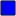

<!doctype html>
<html lang="en">
    <head>
        <meta charset="utf-8">
        <meta http-equiv="X-UA-Compatible" content="IE=edge">
        <meta name="viewport" content="initial-scale=1,user-scalable=no,maximum-scale=1,width=device-width">
        <meta name="mobile-web-app-capable" content="yes">
        <meta name="apple-mobile-web-app-capable" content="yes">
        <link rel="stylesheet" href="css/leaflet.css">
        <link rel="stylesheet" href="css/qgis2web.css"><link rel="stylesheet" href="css/fontawesome-all.min.css">
        <link rel="stylesheet" href="css/leaflet-control-geocoder.Geocoder.css">
        <link rel="stylesheet" href="css/leaflet-measure.css">
        <style>
        html, body, #map {
            width: 100%;
            height: 100%;
            padding: 0;
            margin: 0;
        }
        </style>
        <title></title>
    </head>
    <body>
        <div id="map">
        </div>
        <script src="js/qgis2web_expressions.js"></script>
        <script src="js/leaflet.js"></script>
        <script src="js/leaflet-svg-shape-markers.min.js"></script>
        <script src="js/leaflet.rotatedMarker.js"></script>
        <script src="js/leaflet.pattern.js"></script>
        <script src="js/leaflet-hash.js"></script>
        <script src="js/Autolinker.min.js"></script>
        <script src="js/rbush.min.js"></script>
        <script src="js/labelgun.min.js"></script>
        <script src="js/labels.js"></script>
        <script src="js/leaflet-control-geocoder.Geocoder.js"></script>
        <script src="js/leaflet-measure.js"></script>
        <script src="data/500kVSSpoint_3.js"></script>
        <script src="data/230kVSSpoint_4.js"></script>
        <script src="data/115kVSSpoint_5.js"></script>
        <script>
        var highlightLayer;
        function highlightFeature(e) {
            highlightLayer = e.target;

            if (e.target.feature.geometry.type === 'LineString') {
              highlightLayer.setStyle({
                color: '#ffff00',
              });
            } else {
              highlightLayer.setStyle({
                fillColor: '#ffff00',
                fillOpacity: 1
              });
            }
        }
        var map = L.map('map', {
            zoomControl:true, maxZoom:28, minZoom:1
        })
        var hash = new L.Hash(map);
        map.attributionControl.setPrefix('<a href="https://github.com/tomchadwin/qgis2web" target="_blank">qgis2web</a> &middot; <a href="https://leafletjs.com" title="A JS library for interactive maps">Leaflet</a> &middot; <a href="https://qgis.org">QGIS</a>');
        var autolinker = new Autolinker({truncate: {length: 30, location: 'smart'}});
        var measureControl = new L.Control.Measure({
            position: 'topleft',
            primaryLengthUnit: 'meters',
            secondaryLengthUnit: 'kilometers',
            primaryAreaUnit: 'sqmeters',
            secondaryAreaUnit: 'hectares'
        });
        measureControl.addTo(map);
        document.getElementsByClassName('leaflet-control-measure-toggle')[0]
        .innerHTML = '';
        document.getElementsByClassName('leaflet-control-measure-toggle')[0]
        .className += ' fas fa-ruler';
        var bounds_group = new L.featureGroup([]);
        function setBounds() {
            if (bounds_group.getLayers().length) {
                map.fitBounds(bounds_group.getBounds());
            }
        }
        map.createPane('pane_GoogleSatelliteHybrid_0');
        map.getPane('pane_GoogleSatelliteHybrid_0').style.zIndex = 400;
        var layer_GoogleSatelliteHybrid_0 = L.tileLayer('https://mt1.google.com/vt/lyrs=y&x={x}&y={y}&z={z}', {
            pane: 'pane_GoogleSatelliteHybrid_0',
            opacity: 1.0,
            attribution: '',
            minZoom: 1,
            maxZoom: 28,
            minNativeZoom: 0,
            maxNativeZoom: 19
        });
        layer_GoogleSatelliteHybrid_0;
        map.addLayer(layer_GoogleSatelliteHybrid_0);
        map.createPane('pane_GHI_1');
        map.getPane('pane_GHI_1').style.zIndex = 401;
        var img_GHI_1 = 'data/GHI_1.png';
        var img_bounds_GHI_1 = [[4.0,116.0],[22.0,127.0]];
        var layer_GHI_1 = new L.imageOverlay(img_GHI_1,
                                              img_bounds_GHI_1,
                                              {pane: 'pane_GHI_1'});
        bounds_group.addLayer(layer_GHI_1);
        map.createPane('pane_GHI1800_2');
        map.getPane('pane_GHI1800_2').style.zIndex = 402;
        var img_GHI1800_2 = 'data/GHI1800_2.png';
        var img_bounds_GHI1800_2 = [[4.0,116.0],[22.0,127.0]];
        var layer_GHI1800_2 = new L.imageOverlay(img_GHI1800_2,
                                              img_bounds_GHI1800_2,
                                              {pane: 'pane_GHI1800_2'});
        bounds_group.addLayer(layer_GHI1800_2);
        map.addLayer(layer_GHI1800_2);
        function pop_500kVSSpoint_3(feature, layer) {
            layer.on({
                mouseout: function(e) {
                    for (i in e.target._eventParents) {
                        e.target._eventParents[i].resetStyle(e.target);
                    }
                },
                mouseover: highlightFeature,
            });
            var popupContent = '<table>\
                    <tr>\
                        <td colspan="2">' + (feature.properties['Id'] !== null ? autolinker.link(feature.properties['Id'].toLocaleString()) : '') + '</td>\
                    </tr>\
                    <tr>\
                        <td colspan="2">' + (feature.properties['SSName'] !== null ? autolinker.link(feature.properties['SSName'].toLocaleString()) : '') + '</td>\
                    </tr>\
                </table>';
            layer.bindPopup(popupContent, {maxHeight: 400});
        }

        function style_500kVSSpoint_3_0() {
            return {
                pane: 'pane_500kVSSpoint_3',
                shape: 'square',
                radius: 6.0,
                opacity: 1,
                color: 'rgba(35,35,35,1.0)',
                dashArray: '',
                lineCap: 'butt',
                lineJoin: 'miter',
                weight: 1,
                fill: true,
                fillOpacity: 1,
                fillColor: 'rgba(0,0,255,1.0)',
                interactive: true,
            }
        }
        map.createPane('pane_500kVSSpoint_3');
        map.getPane('pane_500kVSSpoint_3').style.zIndex = 403;
        map.getPane('pane_500kVSSpoint_3').style['mix-blend-mode'] = 'normal';
        var layer_500kVSSpoint_3 = new L.geoJson(json_500kVSSpoint_3, {
            attribution: '',
            interactive: true,
            dataVar: 'json_500kVSSpoint_3',
            layerName: 'layer_500kVSSpoint_3',
            pane: 'pane_500kVSSpoint_3',
            onEachFeature: pop_500kVSSpoint_3,
            pointToLayer: function (feature, latlng) {
                var context = {
                    feature: feature,
                    variables: {}
                };
                return L.shapeMarker(latlng, style_500kVSSpoint_3_0(feature));
            },
        });
        bounds_group.addLayer(layer_500kVSSpoint_3);
        map.addLayer(layer_500kVSSpoint_3);
        function pop_230kVSSpoint_4(feature, layer) {
            layer.on({
                mouseout: function(e) {
                    for (i in e.target._eventParents) {
                        e.target._eventParents[i].resetStyle(e.target);
                    }
                },
                mouseover: highlightFeature,
            });
            var popupContent = '<table>\
                    <tr>\
                        <td colspan="2">' + (feature.properties['Id'] !== null ? autolinker.link(feature.properties['Id'].toLocaleString()) : '') + '</td>\
                    </tr>\
                    <tr>\
                        <td colspan="2">' + (feature.properties['SSName'] !== null ? autolinker.link(feature.properties['SSName'].toLocaleString()) : '') + '</td>\
                    </tr>\
                </table>';
            layer.bindPopup(popupContent, {maxHeight: 400});
        }

        function style_230kVSSpoint_4_0() {
            return {
                pane: 'pane_230kVSSpoint_4',
                shape: 'triangle',
                radius: 6.0,
                opacity: 1,
                color: 'rgba(35,35,35,1.0)',
                dashArray: '',
                lineCap: 'butt',
                lineJoin: 'miter',
                weight: 1,
                fill: true,
                fillOpacity: 1,
                fillColor: 'rgba(41,216,41,1.0)',
                interactive: true,
            }
        }
        map.createPane('pane_230kVSSpoint_4');
        map.getPane('pane_230kVSSpoint_4').style.zIndex = 404;
        map.getPane('pane_230kVSSpoint_4').style['mix-blend-mode'] = 'normal';
        var layer_230kVSSpoint_4 = new L.geoJson(json_230kVSSpoint_4, {
            attribution: '',
            interactive: true,
            dataVar: 'json_230kVSSpoint_4',
            layerName: 'layer_230kVSSpoint_4',
            pane: 'pane_230kVSSpoint_4',
            onEachFeature: pop_230kVSSpoint_4,
            pointToLayer: function (feature, latlng) {
                var context = {
                    feature: feature,
                    variables: {}
                };
                return L.shapeMarker(latlng, style_230kVSSpoint_4_0(feature));
            },
        });
        bounds_group.addLayer(layer_230kVSSpoint_4);
        map.addLayer(layer_230kVSSpoint_4);
        function pop_115kVSSpoint_5(feature, layer) {
            layer.on({
                mouseout: function(e) {
                    for (i in e.target._eventParents) {
                        e.target._eventParents[i].resetStyle(e.target);
                    }
                },
                mouseover: highlightFeature,
            });
            var popupContent = '<table>\
                    <tr>\
                        <td colspan="2">' + (feature.properties['Id'] !== null ? autolinker.link(feature.properties['Id'].toLocaleString()) : '') + '</td>\
                    </tr>\
                    <tr>\
                        <td colspan="2">' + (feature.properties['SSName'] !== null ? autolinker.link(feature.properties['SSName'].toLocaleString()) : '') + '</td>\
                    </tr>\
                </table>';
            layer.bindPopup(popupContent, {maxHeight: 400});
        }

        function style_115kVSSpoint_5_0() {
            return {
                pane: 'pane_115kVSSpoint_5',
                radius: 6.0,
                opacity: 1,
                color: 'rgba(35,35,35,1.0)',
                dashArray: '',
                lineCap: 'butt',
                lineJoin: 'miter',
                weight: 1,
                fill: true,
                fillOpacity: 1,
                fillColor: 'rgba(255,255,0,1.0)',
                interactive: true,
            }
        }
        map.createPane('pane_115kVSSpoint_5');
        map.getPane('pane_115kVSSpoint_5').style.zIndex = 405;
        map.getPane('pane_115kVSSpoint_5').style['mix-blend-mode'] = 'normal';
        var layer_115kVSSpoint_5 = new L.geoJson(json_115kVSSpoint_5, {
            attribution: '',
            interactive: true,
            dataVar: 'json_115kVSSpoint_5',
            layerName: 'layer_115kVSSpoint_5',
            pane: 'pane_115kVSSpoint_5',
            onEachFeature: pop_115kVSSpoint_5,
            pointToLayer: function (feature, latlng) {
                var context = {
                    feature: feature,
                    variables: {}
                };
                return L.circleMarker(latlng, style_115kVSSpoint_5_0(feature));
            },
        });
        bounds_group.addLayer(layer_115kVSSpoint_5);
        map.addLayer(layer_115kVSSpoint_5);
        var osmGeocoder = new L.Control.Geocoder({
            collapsed: true,
            position: 'topleft',
            text: 'Search',
            title: 'Testing'
        }).addTo(map);
        document.getElementsByClassName('leaflet-control-geocoder-icon')[0]
        .className += ' fa fa-search';
        document.getElementsByClassName('leaflet-control-geocoder-icon')[0]
        .title += 'Search for a place';
        var baseMaps = {};
        L.control.layers(baseMaps,{' 115 kV SS point': layer_115kVSSpoint_5,' 230 kV SS point': layer_230kVSSpoint_4,' 500 kV SS point': layer_500kVSSpoint_3,"GHI >= 1800": layer_GHI1800_2,"GHI": layer_GHI_1,"Google Satellite Hybrid": layer_GoogleSatelliteHybrid_0,},{collapsed:false}).addTo(map);
        setBounds();
        var i = 0;
        layer_500kVSSpoint_3.eachLayer(function(layer) {
            var context = {
                feature: layer.feature,
                variables: {}
            };
            layer.bindTooltip((layer.feature.properties['SSName'] !== null?String('<div style="color: #1de5fb; font-size: 11pt; font-weight: bold; font-family: \'Arial\', sans-serif;">' + layer.feature.properties['SSName']) + '</div>':''), {permanent: true, offset: [-0, -16], className: 'css_500kVSSpoint_3'});
            labels.push(layer);
            totalMarkers += 1;
              layer.added = true;
              addLabel(layer, i);
              i++;
        });
        var i = 0;
        layer_230kVSSpoint_4.eachLayer(function(layer) {
            var context = {
                feature: layer.feature,
                variables: {}
            };
            layer.bindTooltip((layer.feature.properties['SSName'] !== null?String('<div style="color: #9aff3b; font-size: 11pt; font-weight: bold; font-family: \'Arial\', sans-serif;">' + layer.feature.properties['SSName']) + '</div>':''), {permanent: true, offset: [-0, -16], className: 'css_230kVSSpoint_4'});
            labels.push(layer);
            totalMarkers += 1;
              layer.added = true;
              addLabel(layer, i);
              i++;
        });
        var i = 0;
        layer_115kVSSpoint_5.eachLayer(function(layer) {
            var context = {
                feature: layer.feature,
                variables: {}
            };
            layer.bindTooltip((layer.feature.properties['SSName'] !== null?String('<div style="color: #ffff00; font-size: 11pt; font-weight: bold; font-family: \'Arial\', sans-serif;">' + layer.feature.properties['SSName']) + '</div>':''), {permanent: true, offset: [-0, -16], className: 'css_115kVSSpoint_5'});
            labels.push(layer);
            totalMarkers += 1;
              layer.added = true;
              addLabel(layer, i);
              i++;
        });
        L.ImageOverlay.include({
            getBounds: function () {
                return this._bounds;
            }
        });
        resetLabels([layer_500kVSSpoint_3,layer_230kVSSpoint_4,layer_115kVSSpoint_5]);
        map.on("zoomend", function(){
            resetLabels([layer_500kVSSpoint_3,layer_230kVSSpoint_4,layer_115kVSSpoint_5]);
        });
        map.on("layeradd", function(){
            resetLabels([layer_500kVSSpoint_3,layer_230kVSSpoint_4,layer_115kVSSpoint_5]);
        });
        map.on("layerremove", function(){
            resetLabels([layer_500kVSSpoint_3,layer_230kVSSpoint_4,layer_115kVSSpoint_5]);
        });
		
		var searchControl = L.Control.extend({
            options: {
                position: 'bottomright'
            },
            onAdd: function (map) {
                var container = L.DomUtil.create('div', 'search-widget leaflet-bar leaflet-control');
                container.innerHTML = `
                    <label for="latitude">Latitude:</label>
                    <input type="text" id="latitude" placeholder="Enter latitude">
                    <label for="longitude">Longitude:</label>
                    <input type="text" id="longitude" placeholder="Enter longitude">
                    <button onclick="searchLocation()">Search Location</button>
                `;
                return container;
            }
        });

        // Add the custom control to the map
        map.addControl(new searchControl());

        function searchLocation() {
            var latitude = parseFloat(document.getElementById('latitude').value);
            var longitude = parseFloat(document.getElementById('longitude').value);

            if (!isNaN(latitude) && !isNaN(longitude)) {
                var marker = L.marker([latitude, longitude]).addTo(map);
                map.setView([latitude, longitude], 15);
            } else {
                alert('Please enter valid latitude and longitude');
            }
        }
		
        </script>
    </body>
</html>
